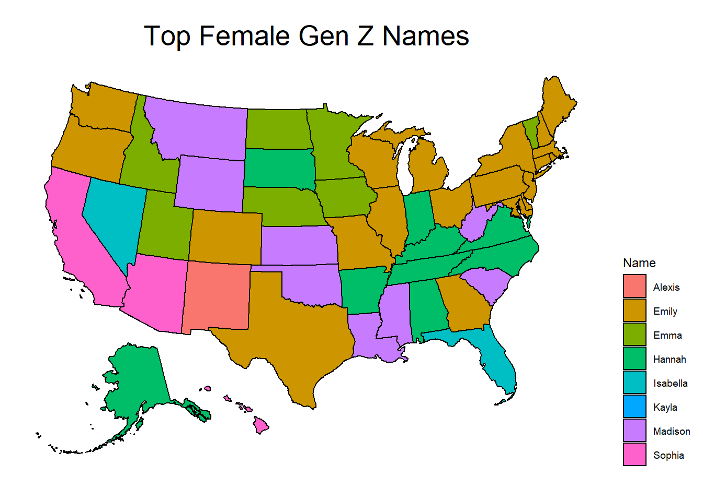
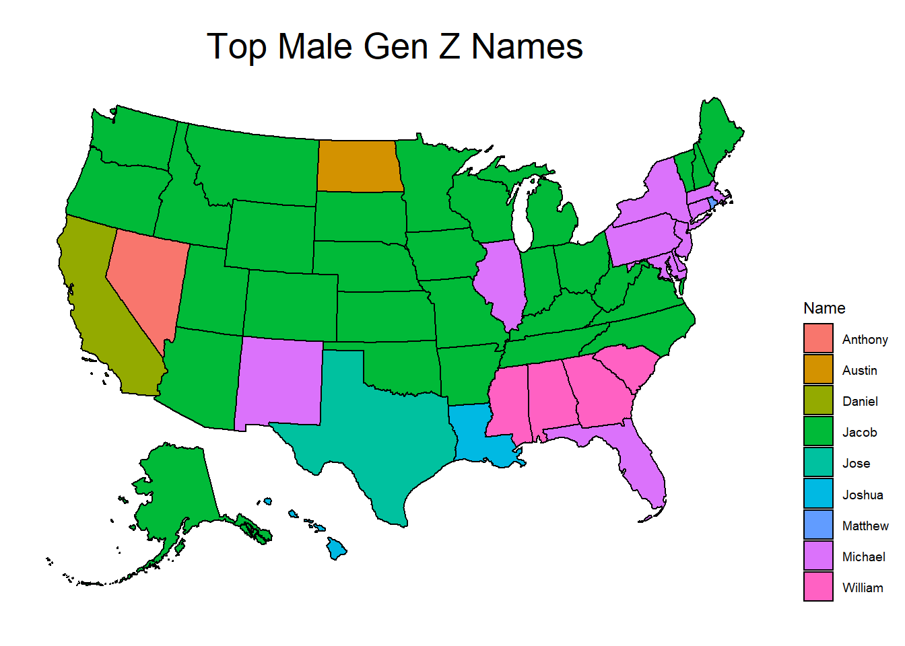
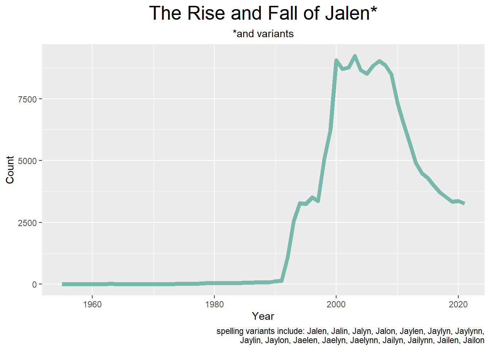
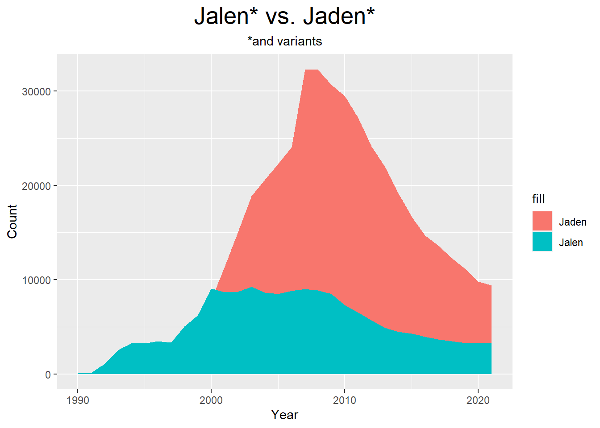

library(tidyverse)
library(ggplot2)
library(lubridate)
library(usmap)
knitr::opts_chunk$set(echo = TRUE, warning=FALSE, message=FALSE)Final Project DRAFT
final
Baby Names in the US
Introduction
Tidying the Data
The data I’ve chosen to use is fairly clean. However, it came in separate CSV files for each state (and Washington DC). First, I have to read in all 51 files. I’m also going to cheat and read in a data set I found that has the national data already cleaned up, becaues I already spent so much time reading in 51 other data sets.
library(readr)
AK <- read_csv("~/School/UMASS/DACSS601/Final/namesbystate/AK.csv",
col_names = FALSE)
AL <- read_csv("~/School/UMASS/DACSS601/Final/namesbystate/AL.csv",
col_names = FALSE)
AR <- read_csv("~/School/UMASS/DACSS601/Final/namesbystate/AR.csv",
col_names = FALSE)
AZ <- read_csv("~/School/UMASS/DACSS601/Final/namesbystate/AZ.csv",
col_names = FALSE)
CA <- read_csv("~/School/UMASS/DACSS601/Final/namesbystate/CA.csv",
col_names = FALSE)
CO <- read_csv("~/School/UMASS/DACSS601/Final/namesbystate/CO.csv",
col_names = FALSE)
CT <- read_csv("~/School/UMASS/DACSS601/Final/namesbystate/CT.csv",
col_names = FALSE)
DC <- read_csv("~/School/UMASS/DACSS601/Final/namesbystate/DC.csv",
col_names = FALSE)
DE <- read_csv("~/School/UMASS/DACSS601/Final/namesbystate/DE.csv",
col_names = FALSE)
FL <- read_csv("~/School/UMASS/DACSS601/Final/namesbystate/FL.csv",
col_names = FALSE)
GA <- read_csv("~/School/UMASS/DACSS601/Final/namesbystate/GA.csv",
col_names = FALSE)
HI <- read_csv("~/School/UMASS/DACSS601/Final/namesbystate/HI.csv",
col_names = FALSE)
IA <- read_csv("~/School/UMASS/DACSS601/Final/namesbystate/IA.csv",
col_names = FALSE)
ID <- read_csv("~/School/UMASS/DACSS601/Final/namesbystate/ID.csv",
col_names = FALSE)
IL <- read_csv("~/School/UMASS/DACSS601/Final/namesbystate/IL.csv",
col_names = FALSE)
IN <- read_csv("~/School/UMASS/DACSS601/Final/namesbystate/IN.csv",
col_names = FALSE)
KS <- read_csv("~/School/UMASS/DACSS601/Final/namesbystate/KS.csv",
col_names = FALSE)
KY <- read_csv("~/School/UMASS/DACSS601/Final/namesbystate/KY.csv",
col_names = FALSE)
LA <- read_csv("~/School/UMASS/DACSS601/Final/namesbystate/LA.csv",
col_names = FALSE)
MA <- read_csv("~/School/UMASS/DACSS601/Final/namesbystate/MA.csv",
col_names = FALSE)
MD <- read_csv("~/School/UMASS/DACSS601/Final/namesbystate/MD.csv",
col_names = FALSE)
ME <- read_csv("~/School/UMASS/DACSS601/Final/namesbystate/ME.csv",
col_names = FALSE)
MI <- read_csv("~/School/UMASS/DACSS601/Final/namesbystate/MI.csv",
col_names = FALSE)
MN <- read_csv("~/School/UMASS/DACSS601/Final/namesbystate/MN.csv",
col_names = FALSE)
MO <- read_csv("~/School/UMASS/DACSS601/Final/namesbystate/MO.csv",
col_names = FALSE)
MS <- read_csv("~/School/UMASS/DACSS601/Final/namesbystate/MS.csv",
col_names = FALSE)
MT <- read_csv("~/School/UMASS/DACSS601/Final/namesbystate/MT.csv",
col_names = FALSE)
NC <- read_csv("~/School/UMASS/DACSS601/Final/namesbystate/NC.csv",
col_names = FALSE)
ND <- read_csv("~/School/UMASS/DACSS601/Final/namesbystate/ND.csv",
col_names = FALSE)
NE <- read_csv("~/School/UMASS/DACSS601/Final/namesbystate/NE.csv",
col_names = FALSE)
NH <- read_csv("~/School/UMASS/DACSS601/Final/namesbystate/NH.csv",
col_names = FALSE)
NJ <- read_csv("~/School/UMASS/DACSS601/Final/namesbystate/NJ.csv",
col_names = FALSE)
NM <- read_csv("~/School/UMASS/DACSS601/Final/namesbystate/NM.csv",
col_names = FALSE)
NV <- read_csv("~/School/UMASS/DACSS601/Final/namesbystate/NV.csv",
col_names = FALSE)
NY <- read_csv("~/School/UMASS/DACSS601/Final/namesbystate/NY.csv",
col_names = FALSE)
OH <- read_csv("~/School/UMASS/DACSS601/Final/namesbystate/OH.csv",
col_names = FALSE)
OK <- read_csv("~/School/UMASS/DACSS601/Final/namesbystate/OK.csv",
col_names = FALSE)
OR <- read_csv("~/School/UMASS/DACSS601/Final/namesbystate/OR.csv",
col_names = FALSE)
PA <- read_csv("~/School/UMASS/DACSS601/Final/namesbystate/PA.csv",
col_names = FALSE)
RI <- read_csv("~/School/UMASS/DACSS601/Final/namesbystate/RI.csv",
col_names = FALSE)
SC <- read_csv("~/School/UMASS/DACSS601/Final/namesbystate/SC.csv",
col_names = FALSE)
SD <- read_csv("~/School/UMASS/DACSS601/Final/namesbystate/SD.csv",
col_names = FALSE)
TN <- read_csv("~/School/UMASS/DACSS601/Final/namesbystate/TN.csv",
col_names = FALSE)
TX <- read_csv("~/School/UMASS/DACSS601/Final/namesbystate/TX.csv",
col_names = FALSE)
UT <- read_csv("~/School/UMASS/DACSS601/Final/namesbystate/UT.csv",
col_names = FALSE)
VA <- read_csv("~/School/UMASS/DACSS601/Final/namesbystate/VA.csv",
col_names = FALSE)
VT <- read_csv("~/School/UMASS/DACSS601/Final/namesbystate/VT.csv",
col_names = FALSE)
WA <- read_csv("~/School/UMASS/DACSS601/Final/namesbystate/WA.csv",
col_names = FALSE)
WI <- read_csv("~/School/UMASS/DACSS601/Final/namesbystate/WI.csv",
col_names = FALSE)
WV <- read_csv("~/School/UMASS/DACSS601/Final/namesbystate/WV.csv",
col_names = FALSE)
WY <- read_csv("~/School/UMASS/DACSS601/Final/namesbystate/WY.csv",
col_names = FALSE)
us_names <- read_csv("~/School/UMASS/DACSS601/Final/names.csv")Now that I’ve read in all those data sets, I need to combine them into one data frame and give them column names (since none of the files had column names). Once that’s done, I’ll sort by year.
#bind all data frames
states <- bind_rows(AK, AL, AR, AZ, CA, CO, CT, DC, DE, FL, GA, HI, IA, ID, IL, IN, KS, KY, LA, MA, MD, ME, MI, MN, MO, MS, MT, NC, ND, NE, NH, NJ, NM, NV, NY, OH, OK, OR, PA, RI, SC, SD, TN, TX, UT, VA, VT, WA, WI, WV, WY)
#rename columns
states <- rename(states, "State" = "X1", "Sex" = "X2", "Year" = "X3", "Name" = "X4", "Count" = "X5")
states# A tibble: 6,311,504 × 5
State Sex Year Name Count
<chr> <chr> <dbl> <chr> <dbl>
1 AK F 1910 Mary 14
2 AK F 1910 Annie 12
3 AK F 1910 Anna 10
4 AK F 1910 Margaret 8
5 AK F 1910 Helen 7
6 AK F 1910 Elsie 6
7 AK F 1910 Lucy 6
8 AK F 1910 Dorothy 5
9 AK F 1911 Mary 12
10 AK F 1911 Margaret 7
# … with 6,311,494 more rows
# ℹ Use `print(n = ...)` to see more rows#split state data into separate tibbles by sex
X <- split(states, states$Sex)
#assign each tibble a name for ease
f_state <- X$F
m_state <- X$M#split national data into separate tibbles by sex
Y <- split(us_names, us_names$Sex)
#assign each tibble a name for ease
f_natl <- Y$F
m_natl <- Y$Marrange(f_natl, Year, desc(Count))# A tibble: 1,209,866 × 4
Name Sex Count Year
<chr> <chr> <dbl> <dbl>
1 Mary F 7065 1880
2 Anna F 2604 1880
3 Emma F 2003 1880
4 Elizabeth F 1939 1880
5 Minnie F 1746 1880
6 Margaret F 1578 1880
7 Ida F 1472 1880
8 Alice F 1414 1880
9 Bertha F 1320 1880
10 Sarah F 1288 1880
# … with 1,209,856 more rows
# ℹ Use `print(n = ...)` to see more rows#top female names nationally, arranged by year
f_natl %>%
group_by(Year) %>%
top_n(1, Count) %>%
arrange(Year)# A tibble: 142 × 4
# Groups: Year [142]
Name Sex Count Year
<chr> <chr> <dbl> <dbl>
1 Mary F 7065 1880
2 Mary F 6919 1881
3 Mary F 8148 1882
4 Mary F 8012 1883
5 Mary F 9217 1884
6 Mary F 9128 1885
7 Mary F 9889 1886
8 Mary F 9888 1887
9 Mary F 11754 1888
10 Mary F 11648 1889
# … with 132 more rows
# ℹ Use `print(n = ...)` to see more rows#setting up data frame to compare top female names
top_f <- f_natl %>%
filter(Name %in% c("Mary", "Linda", "Lisa", "Jennifer", "Jessica", "Ashley", "Emily", "Emma", "Isabella", "Sophia", "Olivia"))
#line plot
fgens <- top_f %>%
ggplot(aes(x=Year, y=Count, group=Name, color=Name)) +
geom_line(size=1.25) +
theme_bw()+
ggtitle("Top Baby Girl Names") +
ylab("Number of Babies Born") +
#add bars to highlight generations
geom_rect(data = top_f,
aes(xmin = 1883, xmax = 1900, ymin = -Inf, ymax = Inf),
color = NA, fill = "grey", alpha = 0.01)+
geom_rect(data = top_f,
aes(xmin = 1928, xmax = 1945, ymin = -Inf, ymax = Inf),
color = NA, fill = "grey", alpha = 0.01)+
geom_rect(data = top_f,
aes(xmin = 1965, xmax = 1980, ymin = -Inf, ymax = Inf),
color = NA, fill = "grey", alpha = 0.01)+
geom_rect(data = top_f,
aes(xmin = 1997, xmax = 2012, ymin = -Inf, ymax = Inf),
color = NA, fill = "grey", alpha = 0.01)+
annotate("text", x=1892, y=100000, label="Lost")+
annotate("text", x=1914, y=95000, label="Greatest")+
annotate("text", x=1936, y=100000, label="Silent")+
annotate("text", x=1955, y=95000, label="Boomers")+
annotate("text", x=1973, y=100000, label="X")+
annotate("text", x=1988, y=95000, label="Millennials")+
annotate("text", x=2005, y=100000, label="Z")+
annotate("text", x=2017, y=95000, label="Alpha")
m_natl %>%
group_by(Year) %>%
top_n(1, Count) %>%
arrange(Year)# A tibble: 142 × 4
# Groups: Year [142]
Name Sex Count Year
<chr> <chr> <dbl> <dbl>
1 John M 9655 1880
2 John M 8769 1881
3 John M 9557 1882
4 John M 8894 1883
5 John M 9388 1884
6 John M 8756 1885
7 John M 9026 1886
8 John M 8110 1887
9 John M 9247 1888
10 John M 8548 1889
# … with 132 more rows
# ℹ Use `print(n = ...)` to see more rows#top male names nationally, arranged by year
top_m <- m_natl %>%
filter(Name %in% c("John", "Robert", "James", "Michael", "David", "Jacob", "Liam"))
#line plot
mgens <- top_m %>%
ggplot(aes(x=Year, y=Count, group=Name, color=Name)) +
geom_line(size=1.25) +
theme_bw()+
ggtitle("Top Baby Boy Names") +
ylab("Number of Babies Born") +
#add bars to highlight generations
geom_rect(data = top_m,
aes(xmin = 1883, xmax = 1900, ymin = -Inf, ymax = Inf),
color = NA, fill = "grey", alpha = 0.01)+
geom_rect(data = top_m,
aes(xmin = 1928, xmax = 1945, ymin = -Inf, ymax = Inf),
color = NA, fill = "grey", alpha = 0.01)+
geom_rect(data = top_m,
aes(xmin = 1965, xmax = 1980, ymin = -Inf, ymax = Inf),
color = NA, fill = "grey", alpha = 0.01)+
geom_rect(data = top_m,
aes(xmin = 1997, xmax = 2012, ymin = -Inf, ymax = Inf),
color = NA, fill = "grey", alpha = 0.01)+
annotate("text", x=1892, y=100000, label="Lost")+
annotate("text", x=1914, y=95000, label="Greatest")+
annotate("text", x=1936, y=100000, label="Silent")+
annotate("text", x=1955, y=95000, label="Boomers")+
annotate("text", x=1973, y=100000, label="X")+
annotate("text", x=1988, y=95000, label="Millennials")+
annotate("text", x=2005, y=100000, label="Z")+
annotate("text", x=2017, y=95000, label="Alpha")
par(mfrow= c(1,2) )
plot(fgens)
plot(mgens)
#name popularity by generation
f_natl %>%
filter(Year %in% c(1883:1900)) %>%
group_by(Year) %>%
top_n(1, Count)# A tibble: 18 × 4
# Groups: Year [18]
Name Sex Count Year
<chr> <chr> <dbl> <dbl>
1 Mary F 11754 1888
2 Mary F 13172 1899
3 Mary F 14406 1898
4 Mary F 11648 1889
5 Mary F 13447 1895
6 Mary F 8012 1883
7 Mary F 12078 1890
8 Mary F 9889 1886
9 Mary F 9128 1885
10 Mary F 12784 1893
11 Mary F 9217 1884
12 Mary F 13151 1894
13 Mary F 9888 1887
14 Mary F 13172 1892
15 Mary F 11703 1891
16 Mary F 13413 1897
17 Mary F 13811 1896
18 Mary F 16705 1900#create top male gen z names data frame
top_genz_m <- m_state %>%
filter(Year %in% c(1997:2012)) %>%
group_by(State) %>%
top_n(1, Count) %>%
rename(state = State)
#plot
mmap <- plot_usmap(data = top_genz_m, values = "Name") +
labs(title = "Top Male Gen Z Names") +
theme(plot.title=element_text(hjust=0.5, size = 20))+
theme(legend.position = "right")
#create top female gen z names data frame
top_genz_f <- f_state %>%
filter(Year %in% c(1997:2012)) %>%
group_by(State) %>%
top_n(1, Count) %>%
rename(state = State)
#plot
fmap <- plot_usmap(data = top_genz_f, values = "Name") +
labs(title = "Top Female Gen Z Names") +
theme(plot.title=element_text(hjust=0.5, size = 20))+
theme(legend.position = "right")
par(mfrow= c(1,2) )
plot(fmap)
plot(mmap)
#filter out all the Jalens
jalen_natl <- us_names %>%
filter(Name %in% c("Jalen", "Jalin", "Jalyn", "Jalon", "Jaylen", "Jaylyn", "Jaylynn", "Jaylin", "Jaylon", "Jaelen", "Jaelyn", "Jaelynn", "Jailyn", "Jailynn", "Jailen", "Jailon")) %>%
arrange(Year)
#find the sum of all Jalens (and variants) by year
jalen_natl <- aggregate(jalen_natl["Count"],by=jalen_natl["Year"],sum)
#plot
ggplot(jalen_natl, aes(x=Year, y=Count)) +
geom_line(color="#69b3a2", size=2, alpha=0.9) +
labs(title = "The Rise and Fall of Jalen*",
subtitle = "*and variants",
caption = str_wrap("spelling variants include: Jalen, Jalin, Jalyn, Jalon, Jaylen, Jaylyn, Jaylynn, Jaylin, Jaylon, Jaelen, Jaelyn, Jaelynn, Jailyn, Jailynn, Jailen, Jailon")) +
theme(plot.title=element_text(hjust=0.5, size = 20),
plot.subtitle=element_text(hjust=0.5))
#filter out all the Jadens
jaden_natl <- us_names %>%
filter(Name %in% c("Jaden", "Jadin", "Jadyn", "Jayden", "Jaydon", "Jaydyn", "Jaydin", "Jaeden", "Jaedyn", "Jaedon", "Jaidyn", "Jaidon", "Jaiden")) %>%
arrange(Year)
#find the sum of all Jalens (and variants) by year
jaden_natl <- aggregate(jaden_natl["Count"],by=jaden_natl["Year"],sum)
jaden_natl Year Count
1 1974 9
2 1976 7
3 1977 22
4 1978 13
5 1979 28
6 1980 13
7 1981 38
8 1982 32
9 1983 28
10 1984 31
11 1985 44
12 1986 42
13 1987 47
14 1988 54
15 1989 98
16 1990 107
17 1991 165
18 1992 251
19 1993 358
20 1994 758
21 1995 1051
22 1996 1321
23 1997 1738
24 1998 2842
25 1999 5447
26 2000 7867
27 2001 11380
28 2002 15066
29 2003 18846
30 2004 20578
31 2005 22283
32 2006 24052
33 2007 32234
34 2008 32271
35 2009 30663
36 2010 29446
37 2011 27134
38 2012 24142
39 2013 21963
40 2014 19179
41 2015 16650
42 2016 14689
43 2017 13588
44 2018 12293
45 2019 11141
46 2020 9817
47 2021 9381#plot Jaden vs. Jalen
ggplot() +
geom_area(data = jaden_natl, aes(x=Year, y=Count, fill="Jaden"))+
geom_area(data = jalen_natl, aes(x=Year,y=Count, fill ="Jalen"))+
#removing years with few data points from the x-axis to enhance visibility
xlim(1990,2021)+
labs(title = "Jalen* vs. Jaden*",
subtitle = "*and variants")+
theme(plot.title=element_text(hjust=0.5, size = 20),
plot.subtitle=element_text(hjust=0.5))